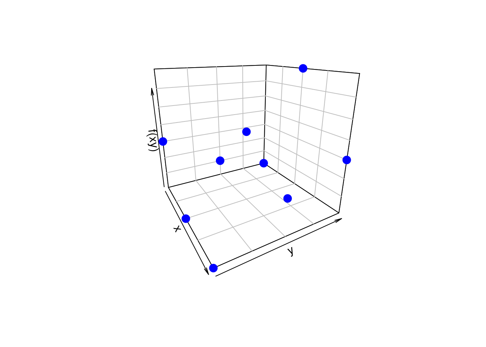
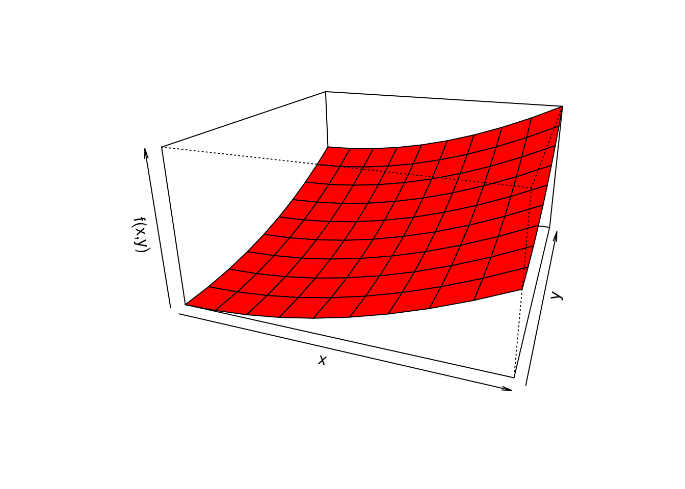
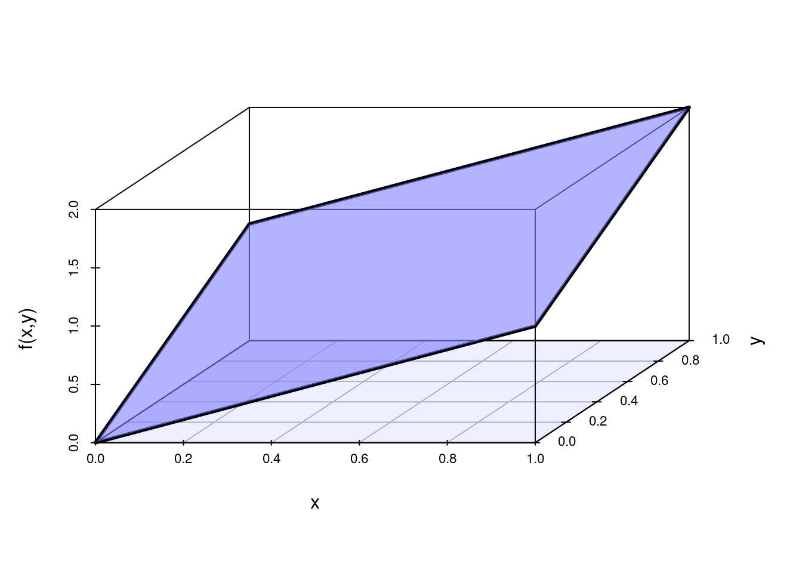
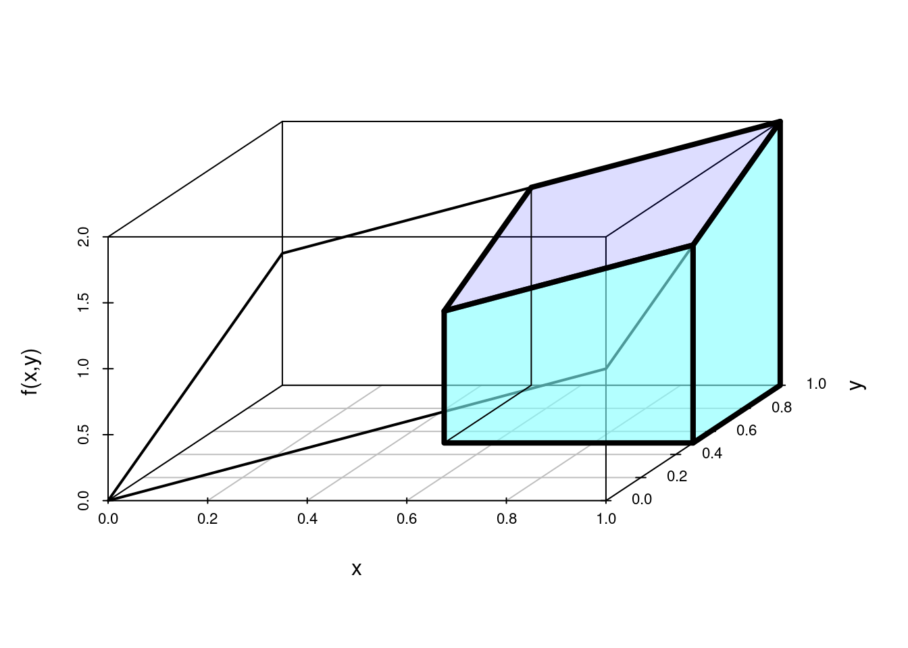
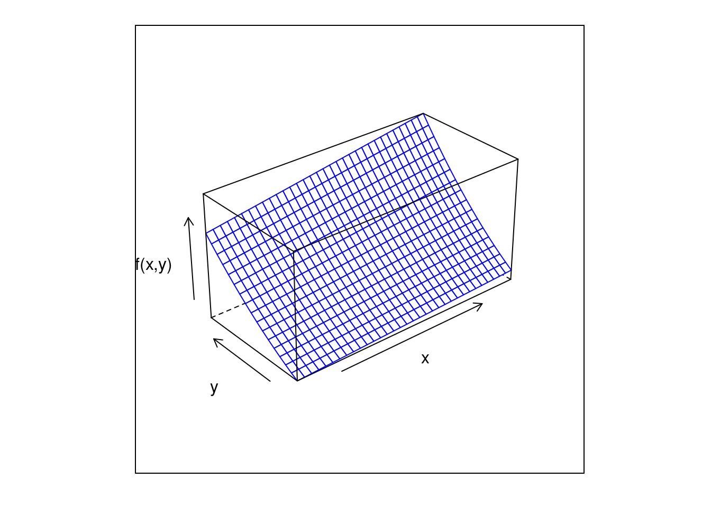

Código 302
Módulo 3- Unidad 3.2
dgonzalez
Caso Discreto-Discreto
Ejemplo 1
El número de veces que falla una máquina \(X\) con \(R_{X}=\{1,2,3\}\) durante un dia y el número de veces en que el operario requiere llamar al técnico para su arreglo esta dado por \(Y\) con \(R_{Y}=\{1,2,3\}\). Su función de probabilidad conjunta para \(X,Y\) está dada por :
| \(x\) | ||||
|---|---|---|---|---|
| \(f(x,y)\) | 1 | 2 | 3 | |
| \(y\) | 1 | 0.05 | 0.05 | 0.10 |
| 2 | 0.050 | 0.10 | 0.35 | |
| 3 | 0 | 0.20 | 0.10 |
Función de distribución de probabilidad conjunta
fxy=matrix(c(0.05,0.05,0,0.05,0.10,0.20,0.10,0.35,0.10), ncol=3 )
fxy [,1] [,2] [,3]
[1,] 0.05 0.05 0.10
[2,] 0.05 0.10 0.35
[3,] 0.00 0.20 0.10sum(fxy)[1] 1Funciones distribución marginales
fxy=matrix(c(0.05,0.05,0,0.05,0.10,0.20,0.10,0.35,0.10), ncol=3 )
fxy=addmargins(fxy,c(1,2))
colnames(fxy)=c("1","2","3","h(y)")
rownames(fxy)=c("1","2","3","g(x)")
fxy 1 2 3 h(y)
1 0.05 0.05 0.10 0.2
2 0.05 0.10 0.35 0.5
3 0.00 0.20 0.10 0.3
g(x) 0.10 0.35 0.55 1.0Representación gráfica de \(f(x,y)\)
Para construir la gráfica de X y Y debemos crear los vectores
| x | 1 | 1 | 1 | 2 | 2 | 2 | 3 | 3 | 3 |
| y | 1 | 2 | 3 | 1 | 2 | 3 | 1 | 2 | 3 |
| fxy | 0.15 | 0.05 | 0 | 0 | 0.20 | 0.35 | 0 | 0.10 | 0.15 |
x=1:3
y=1:3
x=rep(x,each=3)
y=rep(y,3)
fxy=c(0.15,0.05,0, 0,0.20,0.35, 0,0.10,0.15)
plot3D::scatter3D(x, y, fxy,
colvar = NULL,
col = "blue",
pch = 19, cex = 1.5,
phi = 20, theta = 60,
zlab="f(xy)", xlab="x", ylab="y",
bty = "b2",
col.panel ="steelblue",
col.grid = "darkblue",
add_lines=TRUE)
Funciones de distribución marginal
fxy=matrix(c(0.05,0.05,0,0.05,0.10,0.20,0.10,0.35,0.10), ncol=3 )
fxy=addmargins(fxy,c(1,2))
colnames(fxy)=c("1","2","3","h(y)")
rownames(fxy)=c("1","2","3","g(x)")
fxy 1 2 3 h(y)
1 0.05 0.05 0.10 0.2
2 0.05 0.10 0.35 0.5
3 0.00 0.20 0.10 0.3
g(x) 0.10 0.35 0.55 1.0Covarianza y Correlación
x=c(0,1,2)
y=c(0,1,2)
fxy=matrix(c(0.15,0.05,0,0,0.20,0.35,0,0.10,0.15), ncol=3 )
fxy=addmargins(fxy,c(1,2))
colnames(fxy)=c("1","2","3","h(y)")
rownames(fxy)=c("1","2","3","g(x)")
fxy=as.table(fxy)
gx=fxy[,4]
hy=fxy[4,]
Ex=sum(x*gx)
Ex2=sum(x^2*gx)
Vx=Ex2-(Ex)^2
Ey=sum(y*hy)
Ey2=sum(y^2*hy)
Vy=Ey2-(Ey)^2
x=rep(x,each=3)
y=rep(y,3)
fxy=c(0.15,0.05,0,0,0.20,0.35,0,0.10,0.15)
Exy=sum(x*y*fxy)
CovXY=Exy-Ex*Ey
Rho=CovXY/sqrt(Vx*Vy)E(X) = 1.35 E(X2) = 2.35 V(X) = 0.5275 E(Y) = 1.05 E(Y2) = 1.55 V(Y) = 0.4475 E(XY) = 1.7 Cov(XY) = 0.2825 Rho = 0.5814478 Caso Continuo-continuo
Ejemplo 2
Una empresa prestadora se servicios a domicilio tienen dos lineas telefónicas para que los clientes puedan realizar sus pedidos. Sea X y Y la proporción del tiempo en que las lineas se encuentran ocupadas. La función de densidad conjunta que modela \(f(x,y)\) esta dada por:
\[f(x,y) = \left \{ \begin{matrix} \dfrac{3}{2}(x^{2}+y^{2}) & \mbox{ } 0 \leq x \leq 1\\
& \mbox{ } 0 \leq y \leq 1 \\
&\\
0 & \mbox{ en otro caso }\end{matrix}\right. \]
Inicialmente se verifica la condición :
\(\displaystyle\int_{0}^{1} \displaystyle\int_{0}^{1} \dfrac{3}{2}(x^{2}+y^{2}) \:dx \:dy = 1\)
library(cubature)
fxy <- function(x) { 3/2*(x[1]^2 + x[2]^2)} #
adaptIntegrate(fxy, lowerLimit = c(0, 0), upperLimit = c(1, 1))$integral
[1] 1
$error
[1] 2.220446e-16
$functionEvaluations
[1] 17
$returnCode
[1] 0basado en : http://homepages.math.uic.edu/~jyang06/stat401/handouts/handout8.pdf
Ahora su representación gráfica
x=seq(0,1,length=10)
y=seq(0,1,length=10)
fxy=function(x,y){3/2*(x^2+y^2)}
z=outer(x, y, fxy)
persp(x,y,z,theta = 20, phi = 20,expand=0.5, col = "red",
xlab = "x", ylab ="y", zlab = "f(x,y)",
main=" ", col.main="blue")
Nota: basada en : https://estadistica-dma.ulpgc.es/cursoR4ULPGC/9e-grafPersp.html
Otras alternativas


Otros gráficos
\[f(x,y) = \left \{ \begin{matrix} \dfrac{2}{3}\Big(x+2y\Big) & \mbox{ } 0 \leq x \leq 1\\ & \mbox{ } 0 \leq y \leq 1 \\ &\\ 0 & \mbox{ en otro caso }\end{matrix}\right. \]
library("scatterplot3d")
x <- c(0,1,1,0,0)
y <- c(0,0,1,1,0)
z <- c(0,1,2,1,0)
s <- scatterplot3d(x,y,z, type='l',xlim=c(0,1),ylim=c(0,1),zlim=c(0,2), angle=45,
xlab="x", ylab="y", zlab="f(x,y) ",scale.y=0.7,cex.axis=.7, cex.names = .7, lwd=3,
grid=TRUE, box=TRUE,
label.tick.marks=TRUE)
# plano XY
x0=c(0,1,1,0)
y0=c(0,0,1,1)
z0=c(0,0,0,0)
polygon(s$xyz.convert(x0,y0,z0),col="#0000ff11") # morado claro
# Funcion de densidad de probabilidad f(x,y)
x1=c(0,1,1,0)
y1=c(0,0,1,1)
z1=c(0,1,2,1)
polygon(s$xyz.convert(x1,y1,z1),col="#8080FF99") # morado 
\[P(X \geq 0.5 ; Y \geq 0.5) = \int_{0.5}^{1} \int_{0.5}^{1} \dfrac{2}{3}\Big(x+2y\Big) \:dx \:dy\]
library("scatterplot3d")
x <- c(0,1,1,0,0)
y <- c(0,0,1,1,0)
z <- c(0,1,2,1,0)
s <- scatterplot3d(x,y,z, type='l',xlim=c(0,1),ylim=c(0,1),zlim=c(0,2), angle=45,
xlab="x", ylab="y", zlab="f(x,y) ",scale.y=0.7,cex.axis=.7, cex.names = .7,lwd=2,
grid=TRUE, box=TRUE,
label.tick.marks=TRUE)
# plano fxy - techo
x4=c(.5,1,1,.5)
y4=c(.5,.5,1,1)
z4=c(1 ,1.5,2,1.5)
polygon(s$xyz.convert(x4,y4,z4),col="#0000ff22", lwd=4) #violeta
# frente
x5=c(0.5,1,1,0.5)
y5=c(0.5,0.5,0.5,0.5)
z5=c(0,0,1.5,1)
polygon(s$xyz.convert(x5,y5,z5),col="#80FFFF99",lwd=4) # azul claro
# lateral derecho
x6=c(1,1,1,1)
y6=c(.5,1,1,.5)
z6=c(0,0,2,1.5)
polygon(s$xyz.convert(x6,y6,z6),col="#80FFFF99",lwd=4) # azul claro
# lateral izquierdo si va transparente
x7=c(.5,.5,.5,.5)
y7=c(.5,1,1,.5)
z7=c(0,0,1.5,1)
polygon(s$xyz.convert(x7,y7,z7)) # 
\[f_{XY}(x,y)=\left\{\begin{matrix}\ \dfrac{48}{49} xy^{2} & 3\leq x \leq 4, \hspace{.5cm} 0.5 \leq y \leq 1 \\ & \\ 0 & \mbox{para cualquier otro caso} \end{matrix}\right.\]
library(lattice)
x=seq(3,4,by=0.03)
y=seq(0.5,1,by=0.03)
fun=function(x,y){48*x*y^2/49}
z=outer(x,y,fun)
wireframe(z,xlab="x",ylab="y",zlab="f(x,y)",col="blue")
x=seq(3,4,by=0.03)
y=seq(0.5,1,by=0.03)
fxy=function(x,y){48*x*y^2/49}
z=outer(x, y, fxy)
persp(x,y,z,theta = 40, phi = 10,expand=0.5, col = "orange",
xlab = "x", ylab ="y", zlab = "f(x,y)",
main=" ", col.main="blue")
# tomada de:
# http://pj.freefaculty.org/R/WorkingExamples/plot-3d-MVNormal-1.R
library("mvtnorm")
N=50
x <- seq(-3,3, length=N)
y <- seq(-3,3,length=N)
z <- matrix(0, N, N)
for (i in 1:N) for (j in 1:N) {
z[i,j]=dmvnorm(c(x[i],y[j]), c(0,0),
matrix(c(1,0.5,0.5,1),2,2))}
persp(x,y,z,theta=20, phi=15,
xlab="x",
ylab="y",
zlab="f(x,y)",
scale=TRUE,
expand=.4,
axes=TRUE,
col="#007FFF")